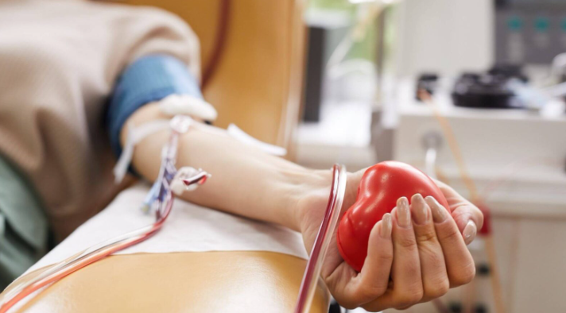
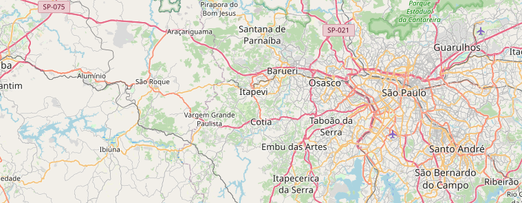

🩸 Doe Vida. Seja um Herói.
Este simulador foi criado para conscientizar a população sobre a importância da doação de sangue e verificar se uma pessoa está temporariamente ou permanentemente inapta para doar.
Milhares de pessoas precisam de sangue todos os dias. Sua doação pode salvar até quatro vidas!

Simulador de Doação de Sangue
Veja se você está apto para doar sangue!
Encontre um Local para Doar
Descubra os hemocentros e postos de coleta mais próximos de você.

Encontre o local de doação mais próximo da sua casa e ajude a salvar vidas!
Buscar Locais